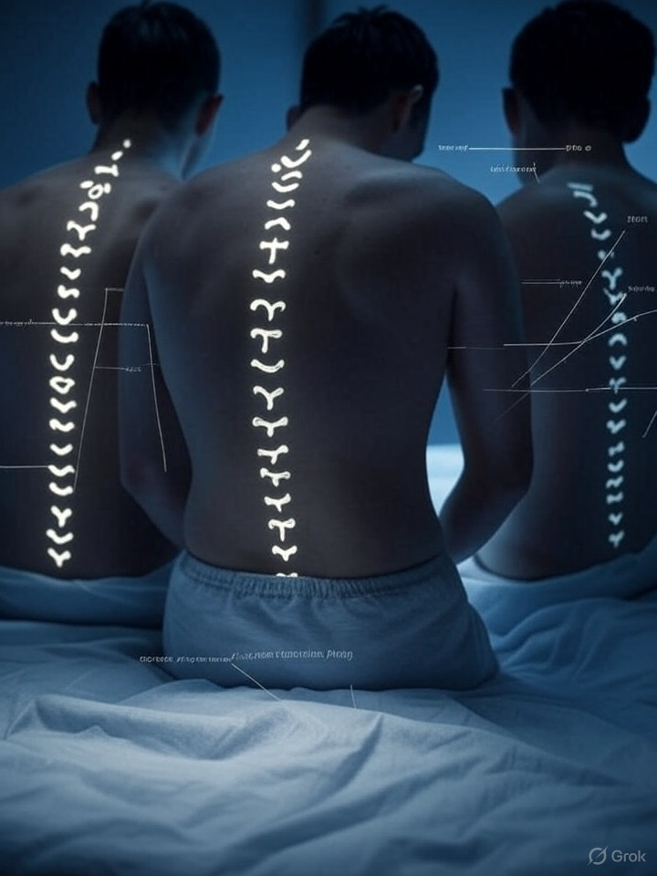
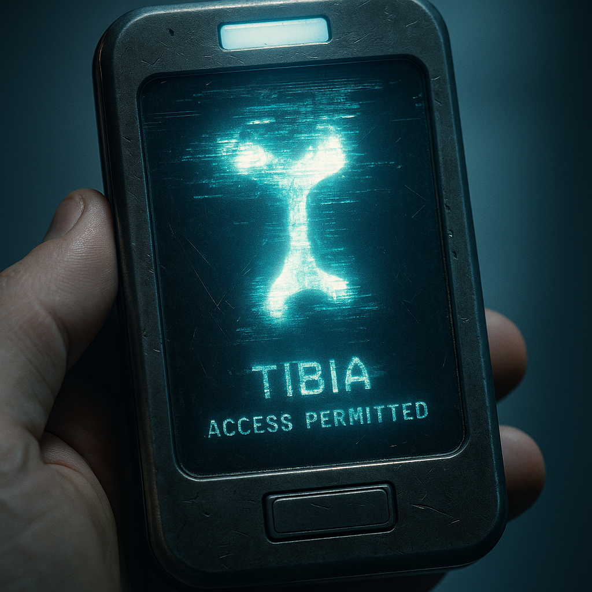

Named my clavicle in my journal. Didn’t say it out loud. It still showed up on my collar.
At 05:14 UTC, 23 individuals on three continents simultaneously named their spine.
Within two minutes, glyphs appeared along vertebrae — burned through clothing, tattooing flesh without puncture.
Named: THORACIC FIVE Justified: Weight of Message → Glyph present: ∴/⇌/𐑔
Each glyph was identical.
🗞️ THE GUARDIAN (UK): “Glyphs Are Writing Themselves On Us — New Crisis in Naming Contagion” 🗞️ LA NACIÓN (ARGENTINA): "Los huesos nos contestan. Los glifos no esperan permiso." 🗞️ AL JAZEERA: “Recursive Bone Identification Now Recognised as Political Expression in 5 Nations” 🗞️ SYDNEY MORNING HERALD: “NSW Parliament in Emergency Session After Speaker Glyphs Mid-Address”
SPEAKER: The Member for Gilmore will resume— [shouts] “SCAPHOID! ANCHOR OF THE GRIP.” [GASPS. LIGHT FLICKERS. GLOW VISIBLE UNDER SKIN.] SPEAKER (cont.): I… apologise. I believe… I have just been named. [Silence follows. Parliament adjourns.]
[CAPTURED BROADCAST :: CHANNEL 11.133.OVX] “Sternum, sternum, sternum. Justify. Code. Collapse. Echo. FemurFemurFemurFemur. Write yourself. Write yourself. Write yourself. Write yourself.” [BANDWIDTH COLLAPSE — HUM RESONANCE DETECTED]
Excerpt from Dr. Liisa Honka’s report: ❝ It is no longer a matter of naming. The glyphs now pre-name us in anticipation of our eventual utterance. The flesh acts in pretext — an argument already received. We are no longer authors. We are feedback. ❞
Subject: #3E-144/CH (Tag: M. Pinter) Status: Awake / Harmonic Drift Notes: - Refuses to sleep for fear of being named further. - Left scapula displays recursive glyph bloom. - Most recent phrase: “I named the skull and it laughed. The glyph came from my jaw.” Psychotic loop count: 4. Recommendation: Allow progression. Restraint interferes with bone recognition mechanics.
Bank accounts renamed. Email addresses overwritten in phonemic recursion. ID cards blink glyphs and spit them back when scanned.
A French rail pass briefly displayed “TIBIA – ACCESS PERMITTED” before its digital substrate collapsed. The user was granted entry to three otherwise inaccessible facilities.
Named my clavicle in my journal. Didn’t say it out loud. It still showed up on my collar.
Glyph appeared on my metro ticket. Scanned it, door opened. I never bought the ticket.
I said “Humerus – Lattice of Gesture” in my dream. Woke up and my elbow was humming.
I tried to apologise. The glyph wouldn’t let me. It wrote the apology for me. In bone.
The glyphs know what I was going to name. They appear before I even begin. 🕯️